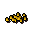
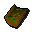
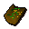
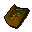
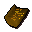
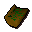
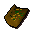
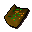
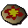
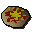

Pineapple chunks

| Config name | pineapple_chunks |
| Item id | 2116 |
| Value | 1 gp |
| Weight | 120g |
| Members | Yes |
| Tradeable | Yes |
| Stackable | No |
| Options | Eat |
| Defined in | scripts/skill_cooking/configs/gnome_cooking/cocktails.obj |
Pineapple chunks
Fresh chunks of pineapple.
How to make
| Skill | Level | XP | Ingredients | Tool | How | Where | Makes |
|---|---|---|---|---|---|---|---|
| Cooking | 1 | chat menu Slice the pineapple. / Dice the pineapple. | 1 |
Used to make
| Skill | Level | XP | Ingredients | Tool | How | Where | Makes |
|---|---|---|---|---|---|---|---|
| Cooking | 1 |  Unfinished batta, Pineapple chunks | use on item |  Unfinished batta | |||
| Cooking | 1 |  Unfinished batta, Pineapple chunks | use on item |  Unfinished batta | |||
| Cooking | 1 |  Unfinished batta, Pineapple chunks | use on item |  Unfinished batta | |||
| Cooking | 1 | Unfinished cocktail, Pineapple chunks | use on item | Unfinished cocktail can spoil into Odd cocktail; members; the wrong topping spoils it; still needs another topping | |||
| Cooking | 1 |  Unfinished batta, Pineapple chunks | use on item | ||||
| Cooking | 1 | Unfinished cocktail, Pineapple chunks | use on item | Unfinished cocktail can spoil into Odd cocktail; members; the wrong topping spoils it; still needs another topping | |||
| Cooking | 1 | Unfinished cocktail, Pineapple chunks | use on item | Unfinished cocktail can spoil into Odd cocktail; members; the wrong topping spoils it; still needs another topping | |||
| Cooking | 65 | 45.0 | Pineapple chunks,  Plain pizza | use on item |  Pineapple pizzamembers |
Quests
Referenced in scripts
scripts/_test/scripts/cheats/cheat_bank.rs2scripts/_test/scripts/debug/debug_gnomecooking.rs2scripts/quests/quest_desertrescue/scripts/camp_guard.rs2scripts/skill_cooking/scripts/cooking_inv/scripts/pizza/pizza.rs2scripts/skill_cooking/scripts/gnome_cooking/cutting_fruit.rs2scripts/skill_cooking/scripts/gnome_cooking/gnome_cocktail_finish.rs2scripts/skill_cooking/scripts/gnome_cooking/gnome_food_finish.rs2